<title>Transit Lakehouse Demo</title>
<meta name="claude:viewport-fit-sides" content="cover">
<link rel="preconnect" href="https://fonts.googleapis.com">
<link rel="preconnect" href="https://fonts.gstatic.com" crossorigin>
<link rel="stylesheet" href="https://fonts.googleapis.com/css2?family=Archivo:wdth,wght@75..100,500..800&family=Public+Sans:ital,wght@0,400;0,600;1,400&family=JetBrains+Mono:wght@400;600&display=swap">
<style>
/* Layout: a transit line diagram. The sticky "line" lists the stops a record passes through,
   in pipeline order; each stop is a section (what it does, a real screenshot, how to use it). */
:root {
  --paper: #f5f7f8;      /* page ground, faint blue-grey bias */
  --panel: #ffffff;
  --ink: #12202b;        /* signage ink */
  --muted: #566672;
  --rule: #d6dee3;
  --line: #0f7a8a;       /* the route line: teal */
  --line-soft: #dff0f2;
  --late: #c9710a;       /* amber = lateness, used only for delay data */
  --late-soft: #fbecd9;
  --good: #1d7f3c;
  --code-bg: #eaeff2;
  --display: "Archivo", "Arial Narrow", "Helvetica Neue", Arial, sans-serif;
  --body: "Public Sans", "Segoe UI", system-ui, sans-serif;
  --mono: "JetBrains Mono", ui-monospace, "Cascadia Mono", Consolas, monospace;
}
@media (prefers-color-scheme: dark) { :root:not([data-theme="light"]) {
  --paper: #0e171d; --panel: #15222b; --ink: #e6edf1; --muted: #9aabb6; --rule: #2a3a45;
  --line: #3cb4c4; --line-soft: #133039; --late: #f0a54a; --late-soft: #3a2a14; --good: #4cc276;
  --code-bg: #1c2b35; color-scheme: dark; } }
:root[data-theme="dark"] {
  --paper: #0e171d; --panel: #15222b; --ink: #e6edf1; --muted: #9aabb6; --rule: #2a3a45;
  --line: #3cb4c4; --line-soft: #133039; --late: #f0a54a; --late-soft: #3a2a14; --good: #4cc276;
  --code-bg: #1c2b35; color-scheme: dark; }

* { box-sizing: border-box; }
body { background: var(--paper); color: var(--ink); font: 16px/1.6 var(--body); margin: 0; }
body::before { content: ""; position: fixed; inset: 0 0 auto; height: env(safe-area-inset-top, 0px); z-index: 10; background: var(--panel); }
.wrap { max-width: 1120px; margin: 0 auto; padding-left: max(16px, env(safe-area-inset-left, 0px)); padding-right: max(16px, env(safe-area-inset-right, 0px)); }
h1, h2, h3 { font-family: var(--display); font-stretch: 85%; line-height: 1.1; text-wrap: balance; margin: 0; }
h1 { font-size: clamp(2.4rem, 6vw, 4rem); font-weight: 800; letter-spacing: -0.01em; }
h2 { font-size: clamp(1.7rem, 3.4vw, 2.3rem); font-weight: 750; }
h3 { font-size: 1.15rem; font-weight: 700; font-stretch: 90%; }
p { margin: 0; max-width: 68ch; }
a { color: var(--line); }
a:focus-visible, summary:focus-visible { outline: 3px solid var(--line); outline-offset: 2px; }
code, kbd { font-family: var(--mono); font-size: 0.86em; background: var(--code-bg); padding: 0.1em 0.35em; border-radius: 4px; }
.eyebrow { font: 600 0.74rem/1 var(--mono); letter-spacing: 0.12em; text-transform: uppercase; color: var(--line); }

/* ---- hero ---- */
header.hero { background: var(--panel); border-bottom: 1px solid var(--rule); }
.hero .wrap { padding-block: 48px 36px; display: grid; gap: 18px; }
.hero p.lede { font-size: 1.15rem; color: var(--muted); }
.facts { display: flex; flex-wrap: wrap; gap: 10px 28px; margin-top: 6px; }
.fact { display: grid; gap: 2px; }
.fact b { font: 700 1.5rem/1.1 var(--display); font-stretch: 85%; font-variant-numeric: tabular-nums; }
.fact span { font-size: 0.82rem; color: var(--muted); }
.hero-links { display: flex; flex-wrap: wrap; gap: 10px; }
.btn { display: inline-flex; align-items: center; gap: 8px; padding: 9px 16px; border-radius: 6px; font-weight: 600; text-decoration: none; border: 1px solid var(--line); }
.btn.primary { background: var(--line); color: var(--panel); }
.btn.ghost { color: var(--line); background: transparent; }

/* ---- the line (sticky stop list) ---- */
nav.line { position: sticky; top: env(safe-area-inset-top, 0px); z-index: 5; background: var(--panel); border-bottom: 1px solid var(--rule); }
nav.line .wrap { overflow-x: auto; }
nav.line ol { list-style: none; margin: 0; padding: 14px 0 12px; display: flex; min-width: max-content; position: relative; }
nav.line ol::before { content: ""; position: absolute; left: 10px; right: 10px; top: 21px; height: 4px; background: var(--line); border-radius: 2px; }
nav.line li { position: relative; padding: 0 14px; }
nav.line a { display: grid; justify-items: center; gap: 6px; text-decoration: none; color: var(--muted); font: 600 0.72rem/1.1 var(--mono); letter-spacing: 0.04em; white-space: nowrap; }
nav.line a::before { content: ""; width: 14px; height: 14px; border-radius: 50%; background: var(--panel); border: 3px solid var(--line); position: relative; z-index: 1; }
nav.line a:hover, nav.line a:focus-visible { color: var(--ink); }
nav.line a:hover::before { background: var(--line); }

/* ---- sections ---- */
main section { border-bottom: 1px solid var(--rule); }
main section > .wrap { padding-block: 56px; display: grid; gap: 22px; }
.stop-head { display: grid; grid-template-columns: auto 1fr; gap: 6px 16px; align-items: center; }
.stop-dot { grid-row: span 2; width: 22px; height: 22px; border-radius: 50%; border: 4px solid var(--line); background: var(--panel); }
.intro { color: var(--muted); font-size: 1.05rem; }
.cols { display: grid; grid-template-columns: repeat(auto-fit, minmax(300px, 1fr)); gap: 22px; align-items: start; }
.cols > * { min-width: 0; }

figure { margin: 0; display: grid; gap: 8px; min-width: 0; }
figure a.shot { display: block; border: 1px solid var(--rule); border-radius: 8px; overflow: hidden; background: var(--panel); line-height: 0; }
figure a.shot:hover { border-color: var(--line); }
figure img { width: 100%; height: auto; display: block; }
figcaption { font-size: 0.88rem; color: var(--muted); max-width: 70ch; }
figcaption b { color: var(--ink); }

.howto { background: var(--line-soft); border-radius: 8px; padding: 16px 18px; display: grid; gap: 10px; min-width: 0; }
.howto h3 { color: var(--line); }
.howto ul { margin: 0; padding-left: 1.1em; display: grid; gap: 6px; }
pre { margin: 0; background: var(--code-bg); border-radius: 6px; padding: 12px 14px; overflow-x: auto; font: 0.82rem/1.55 var(--mono); }
pre code { background: none; padding: 0; font-size: inherit; }

.callout { border-left: 4px solid var(--late); background: var(--late-soft); padding: 12px 16px; border-radius: 0 6px 6px 0; display: grid; gap: 6px; }
.callout.ok { border-color: var(--good); background: var(--line-soft); }

/* tables */
.tbl { overflow-x: auto; border: 1px solid var(--rule); border-radius: 8px; background: var(--panel); }
table { border-collapse: collapse; width: 100%; font-size: 0.9rem; font-variant-numeric: tabular-nums; }
th, td { padding: 8px 12px; text-align: left; border-bottom: 1px solid var(--rule); white-space: nowrap; }
th { font: 600 0.72rem/1.2 var(--mono); letter-spacing: 0.06em; text-transform: uppercase; color: var(--muted); }
tr:last-child td { border-bottom: 0; }
td.num, th.num { text-align: right; }
.route-chip { display: inline-block; min-width: 2.6em; text-align: center; font: 700 0.85rem/1 var(--display); padding: 5px 7px; border-radius: 4px; background: var(--late); color: var(--panel); }

/* hourly chart (drawn to one scale: 0..6 min) */
.chart { background: var(--panel); border: 1px solid var(--rule); border-radius: 8px; padding: 18px 16px 12px; display: grid; gap: 10px; min-width: 0; }
.chart-plot { display: grid; grid-template-columns: 34px 1fr; gap: 8px; }
.axis { position: relative; height: 200px; font: 0.7rem var(--mono); color: var(--muted); }
.axis span { position: absolute; right: 0; transform: translateY(50%); }
.bars { position: relative; height: 200px; display: grid; grid-template-columns: repeat(14, 1fr); gap: 4px; align-items: end;
  background: repeating-linear-gradient(to top, var(--rule) 0 1px, transparent 1px calc(100% / 3)); }
.bar { position: relative; background: var(--line); border-radius: 3px 3px 0 0; min-height: 2px; }
.bar.peak { background: var(--late); }
.bar i { position: absolute; bottom: 100%; left: 50%; transform: translateX(-50%); font: 600 0.66rem/1.6 var(--mono); font-style: normal; color: var(--muted); white-space: nowrap; }
.bar.peak i { color: var(--late); }
.hours { display: grid; grid-template-columns: 34px repeat(14, 1fr); gap: 4px; font: 0.66rem var(--mono); color: var(--muted); text-align: center; }
.hours span:first-child { text-align: right; }
.legend { font-size: 0.8rem; color: var(--muted); }

.numbers { display: grid; grid-template-columns: repeat(auto-fit, minmax(230px, 1fr)); gap: 1px; background: var(--rule); border: 1px solid var(--rule); border-radius: 8px; overflow: hidden; }
.numbers div { background: var(--panel); padding: 16px; display: grid; gap: 4px; }
.numbers b { font: 750 1.6rem/1.1 var(--display); font-stretch: 85%; font-variant-numeric: tabular-nums; }
.numbers span { font-size: 0.85rem; color: var(--muted); }

details { background: var(--panel); border: 1px solid var(--rule); border-radius: 8px; padding: 12px 16px; }
summary { cursor: pointer; font-weight: 600; }
details[open] summary { margin-bottom: 10px; }
footer .wrap { padding-block: 36px 48px; color: var(--muted); font-size: 0.9rem; display: grid; gap: 8px; }

@media (max-width: 560px) {
  .bar i { display: none; }
  main section > .wrap { padding-block: 40px; }
}
@media (prefers-reduced-motion: no-preference) { html { scroll-behavior: smooth; } }
</style>

<header class="hero">
  <div class="wrap">
    <div class="eyebrow">Live demo · MBTA Boston · GTFS-realtime</div>
    <h1>Transit Lakehouse</h1>
    <p class="lede">A streaming data pipeline that reads Boston's live bus and train feed every 15 seconds and answers one question: <strong>which routes are chronically late, by how much, and at what time of day?</strong> This page walks through every feature, with real screenshots from the running system and the commands to try each one yourself.</p>
    <div class="facts" aria-label="Headline numbers">
      <div class="fact"><b>~150 ev/s</b><span>live feed, ~540 vehicles</span></div>
      <div class="fact"><b>10,000 ev/s</b><span>sustained in load test</span></div>
      <div class="fact"><b>9.9 s</b><span>p99 ingest → lakehouse</span></div>
      <div class="fact"><b>39</b><span>data-quality gates</span></div>
      <div class="fact"><b>99.6%</b><span>arrivals within 60 s of GPS</span></div>
    </div>
    <div class="hero-links">
      <a class="btn primary" href="https://github.com/kushalmehta2004/transit-lakehouse">Source on GitHub</a>
      <a class="btn ghost" href="#run">Run it yourself</a>
    </div>
  </div>
</header>

<nav class="line" aria-label="Pipeline stops">
  <div class="wrap">
    <ol>
      <li><a href="#answer">Answer</a></li>
      <li><a href="#feed">Feed → Kafka</a></li>
      <li><a href="#bronze">Bronze</a></li>
      <li><a href="#silver">Silver</a></li>
      <li><a href="#gold">Gold</a></li>
      <li><a href="#quality">Quality</a></li>
      <li><a href="#airflow">Airflow</a></li>
      <li><a href="#observe">Observe</a></li>
      <li><a href="#drills">Drills</a></li>
      <li><a href="#perf">Load test</a></li>
      <li><a href="#k8s">Kubernetes</a></li>
      <li><a href="#run">Run it</a></li>
    </ol>
  </div>
</nav>

<main>

<!-- ============ ANSWER ============ -->
<section id="answer">
  <div class="wrap">
    <div class="stop-head"><span class="stop-dot"></span><span class="eyebrow">The point of it all</span><h2>Which routes are chronically late?</h2></div>
    <p class="intro">This is the gold table <code>chronically_late_routes</code>, refreshed by Airflow every 15 minutes from about 300,000 observed stop visits across three service days (Oct 19–21, 2026). A route qualifies if it averages 3 or more minutes late, or if 25% or more of its stop visits run over 5 minutes late.</p>
    <div class="cols">
      <div class="tbl">
        <table>
          <thead><tr><th>#</th><th>Route</th><th class="num">Stop visits</th><th class="num">Avg late</th><th class="num">&gt; 5 min late</th><th class="num">Worst hour</th></tr></thead>
          <tbody>
            <tr><td>1</td><td><span class="route-chip">37</span></td><td class="num">1,057</td><td class="num">14.1 min</td><td class="num">78%</td><td class="num">5 PM</td></tr>
            <tr><td>2</td><td><span class="route-chip">131</span></td><td class="num">508</td><td class="num">9.0 min</td><td class="num">70%</td><td class="num">6 PM</td></tr>
            <tr><td>3</td><td><span class="route-chip">217</span></td><td class="num">290</td><td class="num">8.6 min</td><td class="num">37%</td><td class="num">4 PM</td></tr>
            <tr><td>4</td><td><span class="route-chip">36</span></td><td class="num">1,797</td><td class="num">8.0 min</td><td class="num">55%</td><td class="num">1 AM</td></tr>
            <tr><td>5</td><td><span class="route-chip">505</span></td><td class="num">387</td><td class="num">7.9 min</td><td class="num">55%</td><td class="num">5 PM</td></tr>
            <tr><td>6</td><td><span class="route-chip">456</span></td><td class="num">205</td><td class="num">7.5 min</td><td class="num">66%</td><td class="num">4 PM</td></tr>
            <tr><td>7</td><td><span class="route-chip">120</span></td><td class="num">1,192</td><td class="num">7.3 min</td><td class="num">57%</td><td class="num">5 PM</td></tr>
            <tr><td>8</td><td><span class="route-chip">62</span></td><td class="num">1,959</td><td class="num">7.2 min</td><td class="num">65%</td><td class="num">12 PM</td></tr>
          </tbody>
        </table>
      </div>
      <div class="chart" role="img" aria-label="Average bus lateness by scheduled hour: lowest 1.5 minutes at midnight, peaking at 5.4 minutes at 6 PM">
        <h3>Buses: average minutes late, by hour of day</h3>
        <div class="chart-plot">
          <div class="axis" aria-hidden="true"><span style="bottom:0">0</span><span style="bottom:33.33%">2</span><span style="bottom:66.67%">4</span><span style="bottom:100%">6</span></div>
          <div class="bars" aria-hidden="true">
            <div class="bar" style="height:55%"><i>3.3</i></div>
            <div class="bar" style="height:53.3%"><i>3.2</i></div>
            <div class="bar" style="height:60%"><i>3.6</i></div>
            <div class="bar" style="height:70%"><i>4.2</i></div>
            <div class="bar" style="height:75%"><i>4.5</i></div>
            <div class="bar" style="height:71.7%"><i>4.3</i></div>
            <div class="bar peak" style="height:90%"><i>5.4</i></div>
            <div class="bar" style="height:66.7%"><i>4.0</i></div>
            <div class="bar" style="height:55%"><i>3.3</i></div>
            <div class="bar" style="height:46.7%"><i>2.8</i></div>
            <div class="bar" style="height:35%"><i>2.1</i></div>
            <div class="bar" style="height:36.7%"><i>2.2</i></div>
            <div class="bar" style="height:25%"><i>1.5</i></div>
            <div class="bar" style="height:48.3%"><i>2.9</i></div>
          </div>
        </div>
        <div class="hours" aria-hidden="true"><span>min</span><span>12p</span><span>1p</span><span>2p</span><span>3p</span><span>4p</span><span>5p</span><span>6p</span><span>7p</span><span>8p</span><span>9p</span><span>10p</span><span>11p</span><span>12a</span><span>1a</span></div>
        <p class="legend">The evening rush is the worst: 5.4 min late at 6 PM, against 1.5 min after midnight. Hours 2 AM–11 AM aren't in this sample because the stack was off overnight. Source: <code>gold.route_lateness_by_hour</code>.</p>
      </div>
    </div>
  </div>
</section>

<!-- ============ FEED → KAFKA ============ -->
<section id="feed">
  <div class="wrap">
    <div class="stop-head"><span class="stop-dot"></span><span class="eyebrow">Stop 1 · Ingestion</span><h2>Live feed into Kafka</h2></div>
    <p class="intro">A Python poller fetches MBTA's GTFS-realtime protobuf feeds every 15 seconds (vehicle positions and trip predictions, no API key needed). It validates each record, stamps <code>event_time</code> and <code>ingest_time</code>, and produces JSON to Redpanda, a Kafka-compatible broker. Messages are keyed by route so each route stays in order. Anything it can't fetch, decode or validate goes to a dead-letter topic with the error attached.</p>
    <div class="cols">
      <figure>
        <a class="shot" href="img/kafka-topics.png">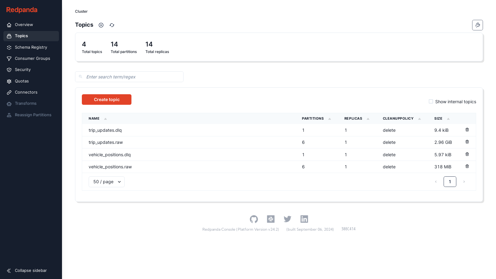</a>
        <figcaption><b>Topics.</b> Two raw topics with 6 partitions each, plus their <code>.dlq</code> dead-letter topics.</figcaption>
      </figure>
      <figure>
        <a class="shot" href="img/kafka-messages.png">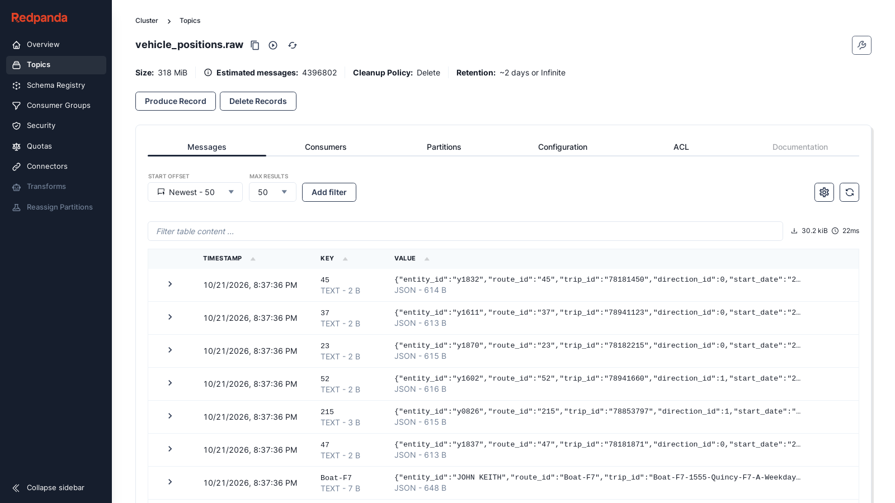</a>
        <figcaption><b>Live messages.</b> Each record is keyed by <code>route_id</code> (45, 37, Boat-F7…); 4.4 million vehicle positions so far.</figcaption>
      </figure>
    </div>
    <div class="howto">
      <h3>Try it</h3>
      <ul>
        <li>Open the Kafka console at <a href="http://localhost:8080">localhost:8080</a> → Topics → <code>vehicle_positions.raw</code> → Messages.</li>
        <li>Follow the poller's log: <code>docker logs -f poller</code>. Each poll prints a line like <code>538 entities -&gt; 443 produced, 95 unchanged, 0 invalid</code>.</li>
        <li>See its metrics at <a href="http://localhost:8000/metrics">localhost:8000/metrics</a>: <code>gtfs_events_produced_total</code>, poll latency, DLQ counts.</li>
      </ul>
    </div>
  </div>
</section>

<!-- ============ BRONZE ============ -->
<section id="bronze">
  <div class="wrap">
    <div class="stop-head"><span class="stop-dot"></span><span class="eyebrow">Stop 2 · Spark Structured Streaming</span><h2>Bronze: exactly what arrived</h2></div>
    <p class="intro">A Spark streaming job reads both topics every 10 seconds and lands them, untransformed, into Apache Iceberg tables on MinIO (S3-compatible storage). Each row keeps its Kafka partition and offset, which is how exactly-once delivery was proven: after a <code>kill -9</code>, there were zero duplicate offsets. A Postgres-backed Iceberg catalog gives safe concurrent commits.</p>
    <div class="cols">
      <figure>
        <a class="shot" href="img/spark-bronze-queries.png">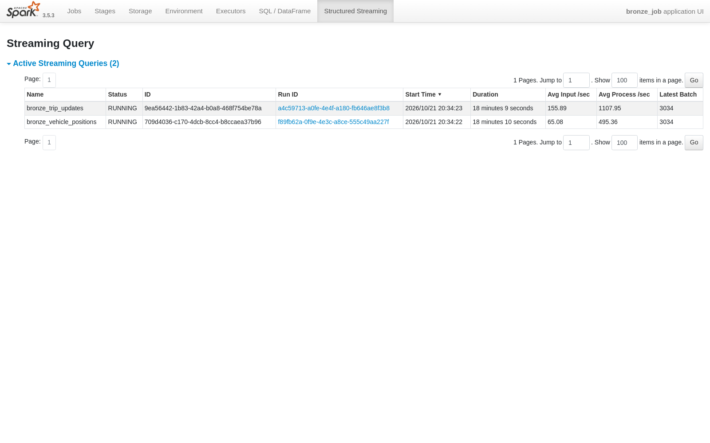</a>
        <figcaption><b>Two streaming queries,</b> one per topic, both RUNNING in the Spark UI.</figcaption>
      </figure>
      <figure>
        <a class="shot" href="img/minio-warehouse.png">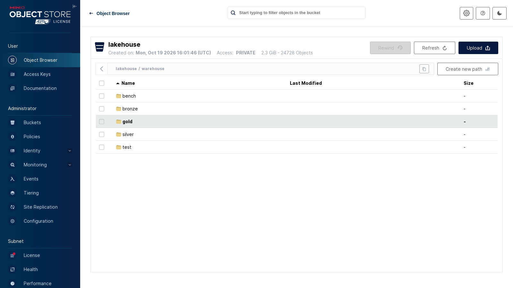</a>
        <figcaption><b>The lakehouse on MinIO:</b> <code>warehouse/</code> holds the bronze, silver and gold Iceberg tables. <code>checkpoints/</code> holds Spark's offsets and state.</figcaption>
      </figure>
    </div>
    <div class="howto">
      <h3>Try it</h3>
      <pre><code>docker compose exec spark python sql.py "SELECT count(*) FROM bronze.vehicle_positions"
docker compose exec spark python sql.py "SELECT committed_at, summary['added-records'] FROM bronze.vehicle_positions.snapshots ORDER BY committed_at DESC LIMIT 5"</code></pre>
      <ul><li>Spark UI at <a href="http://localhost:4040">localhost:4040</a> → Structured Streaming. MinIO at <a href="http://localhost:9001">localhost:9001</a> (minioadmin / minioadmin).</li></ul>
    </div>
  </div>
</section>

<!-- ============ SILVER ============ -->
<section id="silver">
  <div class="wrap">
    <div class="stop-head"><span class="stop-dot"></span><span class="eyebrow">Stop 3 · Stream-static join + watermark</span><h2>Silver: a delay for every stop</h2></div>
    <p class="intro">MBTA publishes only predictions. When a bus passes a stop, that stop disappears from the feed. So the silver job records the <strong>last prediction made before the stop vanished</strong> as the observed arrival. It joins that to the timetable (broadcast, filtered to the trips running that day, with correct handling of times like <code>25:10:00</code>) and computes <code>delay_seconds</code>.</p>
    <div class="cols">
      <figure>
        <a class="shot" href="img/spark-silver-statistics.png">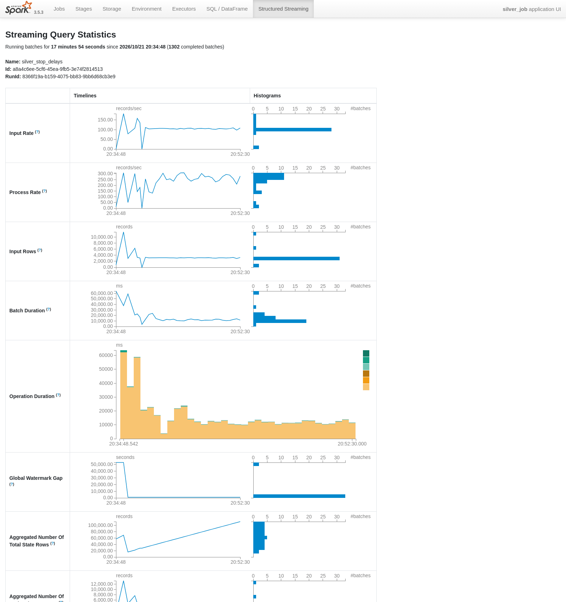</a>
        <figcaption><b>Silver query statistics:</b> input and processing rate, batch duration, the global watermark gap, and the state-store rows. State stays bounded at about 2.5k trips plus 150k dedup keys.</figcaption>
      </figure>
      <div style="display:grid;gap:14px;min-width:0">
        <div class="callout">
          <h3>What happens to an event that arrives 20 minutes late?</h3>
          <p>A 15-minute event-time watermark holds each passed stop until no older update can still arrive, and only then writes it. Anything less than 15 minutes late still counts. Anything later is dropped from silver and counted, but it stays in bronze for backfill. Replaying real data with chunks reversed produced <strong>identical output, row for row</strong>. The cost is that silver lands about 16 minutes after the bus passes, which is the right trade-off for a historical question.</p>
        </div>
        <div class="callout ok">
          <h3>Checked against GPS</h3>
          <p>Of 14,394 stop visits where the vehicle's GPS reported <code>STOPPED_AT</code> that stop, the median difference was 6 s and <strong>99.6% were within 60 s</strong>.</p>
        </div>
      </div>
    </div>
    <div class="howto">
      <h3>Try it</h3>
      <pre><code>docker compose exec spark python sql.py "SELECT route_id, stop_id, scheduled_time, observed_time, delay_seconds FROM silver.stop_delays ORDER BY processed_time DESC LIMIT 10"
docker compose run --rm --no-deps spark python tests/replay_reorder.py   # the reorder + late-data test (~8 min)</code></pre>
      <ul><li><code>docker logs -f spark-silver</code> prints the watermark, state size and late-dropped count for each batch.</li></ul>
    </div>
  </div>
</section>

<!-- ============ GOLD ============ -->
<section id="gold">
  <div class="wrap">
    <div class="stop-head"><span class="stop-dot"></span><span class="eyebrow">Stop 4 · dbt</span><h2>Gold: the analytics tables</h2></div>
    <p class="intro">dbt connects through a Spark Thrift (JDBC) server and builds the gold layer. <code>route_lateness_by_hour</code> computes average, median and p90 delay per route, per day, per hour; it's incremental and overwrites only the days it reprocesses. <code>chronically_late_routes</code> rolls that up over seven days, and <code>dim_routes</code> adds names and modes. The lineage graph shows silver flowing into gold.</p>
    <div class="cols">
      <figure>
        <a class="shot" href="img/dbt-lineage.png">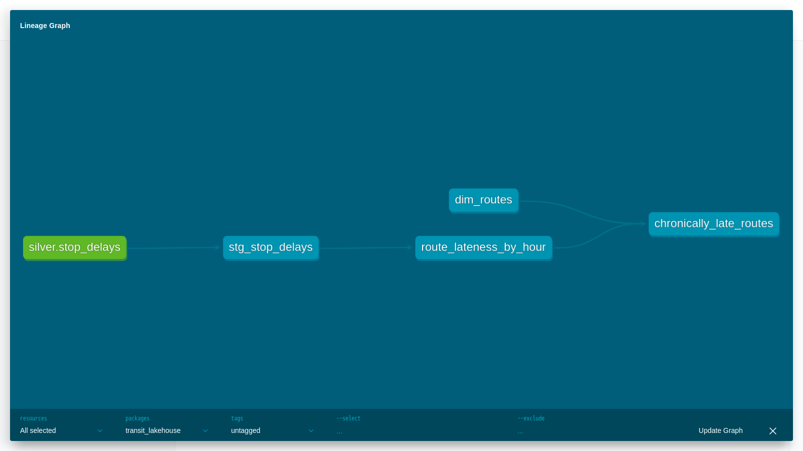</a>
        <figcaption><b>Lineage:</b> <code>silver.stop_delays</code> → <code>stg_stop_delays</code> → <code>route_lateness_by_hour</code> → <code>chronically_late_routes</code>.</figcaption>
      </figure>
      <figure>
        <a class="shot" href="img/dbt-model.png">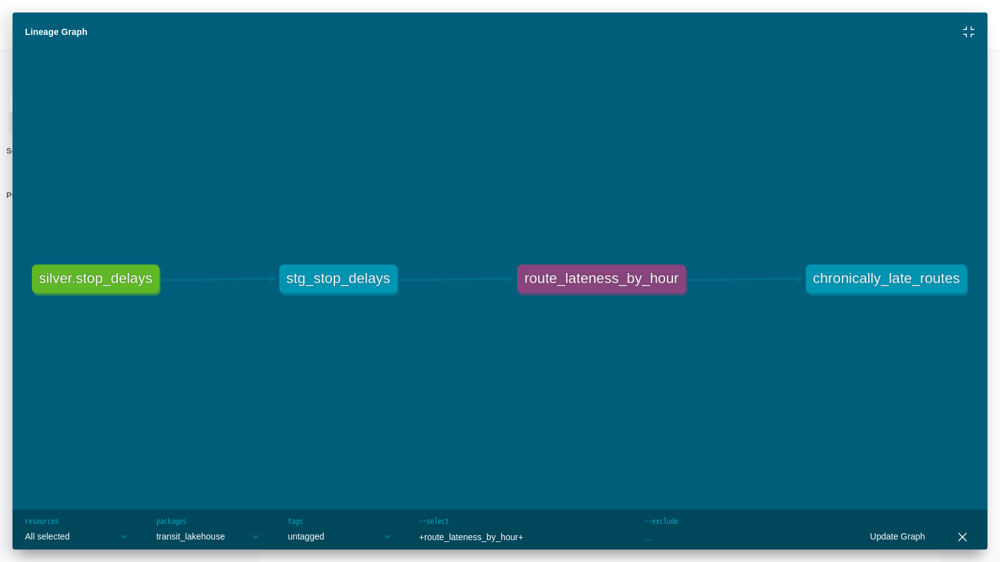</a>
        <figcaption><b>Model docs,</b> with every column and type. A small macro fixed dbt-spark's empty catalog for Iceberg tables.</figcaption>
      </figure>
    </div>
    <div class="howto">
      <h3>Try it</h3>
      <pre><code>docker compose run --rm dbt dbt build              # 3 models + 24 tests
docker compose run --rm dbt dbt docs generate
docker compose run --rm -p 8085:8085 dbt dbt docs serve --host 0.0.0.0 --port 8085 --no-browser</code></pre>
      <ul><li>Open <a href="http://localhost:8085">localhost:8085</a> and click the graph icon at the bottom right for lineage.</li></ul>
    </div>
  </div>
</section>

<!-- ============ QUALITY ============ -->
<section id="quality">
  <div class="wrap">
    <div class="stop-head"><span class="stop-dot"></span><span class="eyebrow">Stop 5 · dbt tests + Great Expectations</span><h2>39 quality gates</h2></div>
    <p class="intro">There are 24 dbt tests (non-null keys, one row per stop visit, route relationships, accepted values, and a custom <code>delay_in_plausible_range</code>) and a 15-expectation Great Expectations suite, which includes timestamp-ordering checks. Any failure turns the pipeline red. The gates caught two real bugs before they reached analytics: a stop counted twice after a trip vanished and came back hours later, and a deleted bad row whose aggregate lingered in gold.</p>
    <div class="cols">
      <div class="howto">
        <h3>Prove the gates work</h3>
        <pre><code>docker compose run --rm dbt python /work/quality/bad_row_drill.py</code></pre>
        <p>This injects a stop visit with a 10-hour delay, then runs dbt and Great Expectations. Both must fail. Then it deletes the row, and both must pass again.</p>
        <pre><code>  [PASS] dbt test fails on bad row
  [PASS] great_expectations fails on bad row
  [PASS] dbt test passes after cleanup
  [PASS] great_expectations passes after cleanup</code></pre>
      </div>
      <div class="howto">
        <h3>Run the checkpoint on its own</h3>
        <pre><code>docker compose run --rm dbt python /work/quality/run_checks.py</code></pre>
        <pre><code>Great Expectations: silver.stop_delays, 56567 rows written in the last 6 h
  [PASS] expect_compound_columns_to_be_unique (service_date, trip_id, stop_sequence)
  [PASS] expect_column_values_to_be_between (delay_seconds)
  [PASS] expect_column_pair_values_a_to_be_greater_than_b (processed_time vs ingest_time)
  …
RESULT: PASSED (15/15 expectations)</code></pre>
      </div>
    </div>
  </div>
</section>

<!-- ============ AIRFLOW ============ -->
<section id="airflow">
  <div class="wrap">
    <div class="stop-head"><span class="stop-dot"></span><span class="eyebrow">Stop 6 · Orchestration</span><h2>Airflow runs it every 15 minutes</h2></div>
    <p class="intro">The pipeline DAG runs <code>dbt_run</code> → <code>dbt_test</code> → <code>ge_checkpoint</code> → <code>mark_refresh</code>. An <code>alert_on_failure</code> task runs only if something failed, and it turns the run red. A second DAG compacts the streaming tables hourly; it brought bronze from about 1,050 small files per table down to a handful. Airflow runs as a single container to keep the laptop footprint small.</p>
    <figure>
      <a class="shot" href="img/airflow-pipeline-graph.png">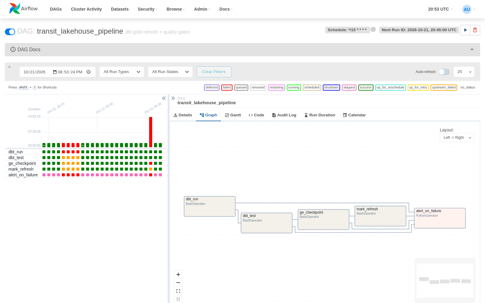</a>
      <figcaption><b>Run history and task graph.</b> Green columns are healthy runs. The red ones are the deliberate quality-failure drills and the bugs fixed along the way. The tall bar is a run that spanned an overnight shutdown.</figcaption>
    </figure>
    <div class="cols">
      <figure>
        <a class="shot" href="img/airflow-dags.png">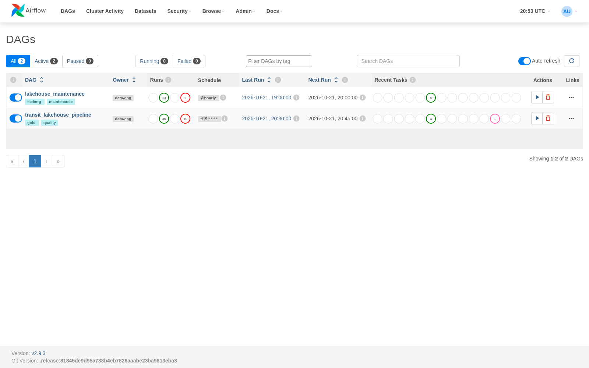</a>
        <figcaption><b>Both DAGs:</b> the pipeline every 15 minutes, and maintenance hourly.</figcaption>
      </figure>
      <figure>
        <a class="shot" href="img/airflow-maintenance-grid.png">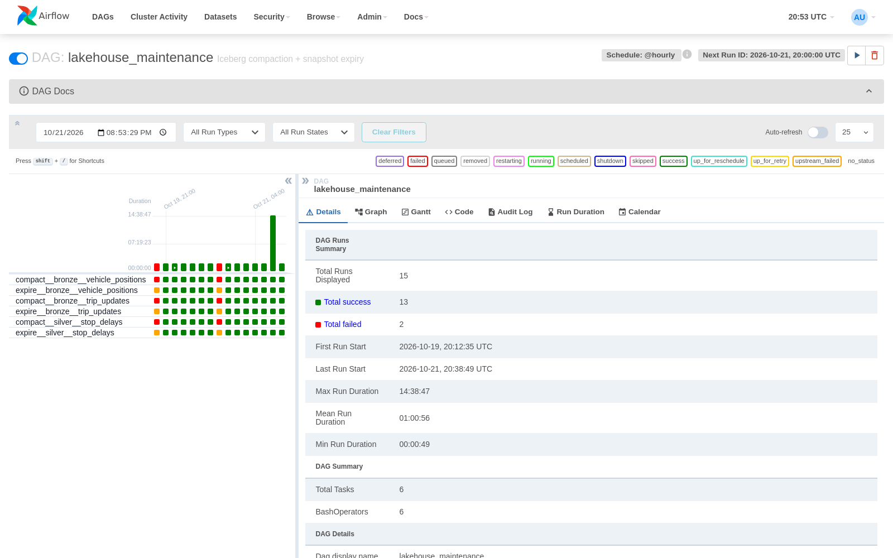</a>
        <figcaption><b>Maintenance:</b> it compacts, then expires snapshots, for each of the three streaming tables, one task at a time.</figcaption>
      </figure>
    </div>
    <div class="howto"><h3>Try it</h3><ul><li>Open <a href="http://localhost:8081">localhost:8081</a> (admin / admin) → <code>transit_lakehouse_pipeline</code> → ▶ to trigger a run, then click any task to read its log.</li></ul></div>
  </div>
</section>

<!-- ============ OBSERVE ============ -->
<section id="observe">
  <div class="wrap">
    <div class="stop-head"><span class="stop-dot"></span><span class="eyebrow">Stop 7 · Prometheus + Grafana</span><h2>See the whole pipeline at a glance</h2></div>
    <p class="intro">Prometheus scrapes the poller, all three Spark apps, Airflow (through StatsD), Redpanda, and a small custom exporter. The exporter measures what no single service can: Kafka consumer lag (from Spark's checkpoint offsets), DLQ depth, ingest-to-lakehouse latency, and data freshness. The Grafana dashboard asks one question per row.</p>
    <figure>
      <a class="shot" href="img/grafana-ingestion.png">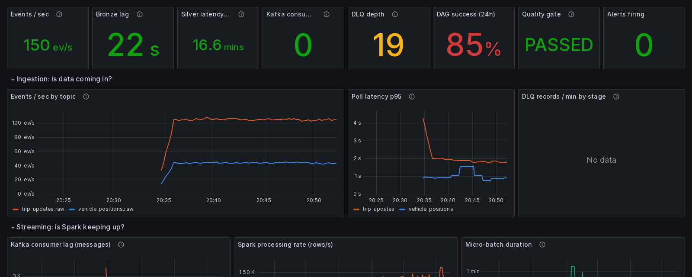</a>
      <figcaption><b>Headline tiles and "Is data coming in?"</b> Events per second, bronze lag, silver latency, consumer lag, DLQ depth, DAG success, quality gate, and alerts.</figcaption>
    </figure>
    <div class="cols">
      <figure>
        <a class="shot" href="img/grafana-streaming-latency.png">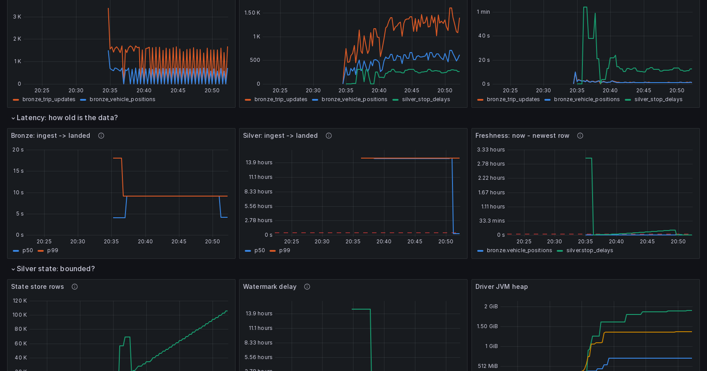</a>
        <figcaption><b>"Is Spark keeping up?" and "How old is the data?"</b> Consumer lag, processing rate, batch duration, and end-to-end latency per stage. The spikes at 20:35 are the catch-up after an overnight shutdown. After that, bronze runs at about 9 s p99 and silver at about 16.5 min.</figcaption>
      </figure>
      <figure>
        <a class="shot" href="img/grafana-state-orchestration.png">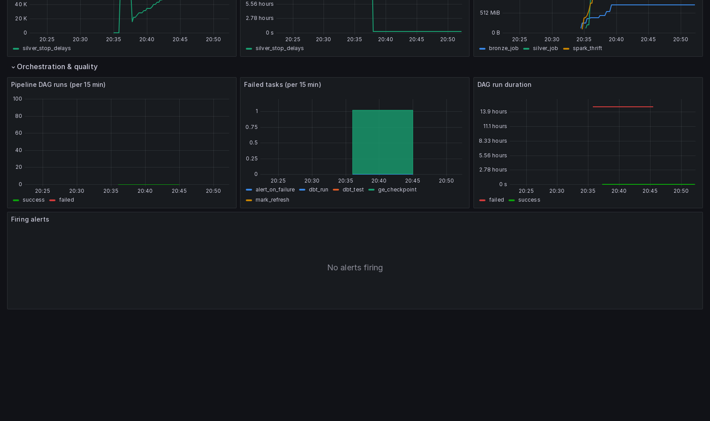</a>
        <figcaption><b>"Is silver's state bounded?" and DAG health,</b> with a firing-alerts table at the bottom.</figcaption>
      </figure>
    </div>
    <div class="cols">
      <figure>
        <a class="shot" href="img/prometheus-alerts.png">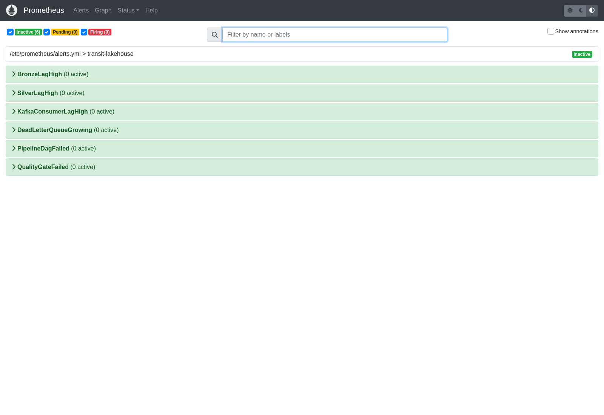</a>
        <figcaption><b>Six alert rules:</b> bronze lag above 2 minutes, silver beyond its designed 16 minutes, consumer lag, DLQ growth, a failed DAG, and a failed quality gate.</figcaption>
      </figure>
      <figure>
        <a class="shot" href="img/prometheus-targets.png">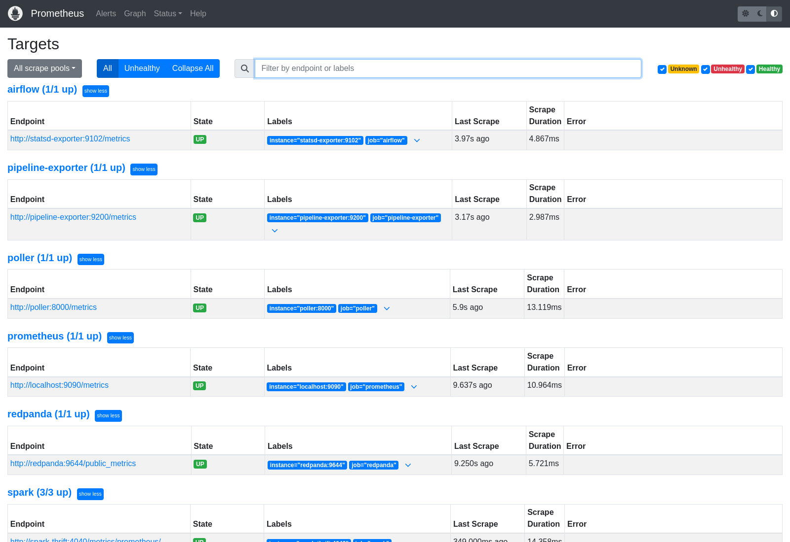</a>
        <figcaption><b>Every scrape target is up.</b></figcaption>
      </figure>
    </div>
    <div class="howto"><h3>Try it</h3><ul><li>Grafana at <a href="http://localhost:3000">localhost:3000</a> opens on this dashboard. Prometheus alerts are at <a href="http://localhost:9090/alerts">localhost:9090/alerts</a>.</li><li>Reading a slowdown: if events/sec drops to 0 while freshness climbs and lag stays at 0, the <em>source</em> stopped. If events/sec is normal and lag climbs, <em>Spark</em> is behind.</li></ul></div>
  </div>
</section>

<!-- ============ DRILLS ============ -->
<section id="drills">
  <div class="wrap">
    <div class="stop-head"><span class="stop-dot"></span><span class="eyebrow">Stop 8 · Failure drills</span><h2>Break it, watch it, fix it</h2></div>
    <div class="cols">
      <figure>
        <a class="shot" href="img/grafana-drill-poller-paused.png">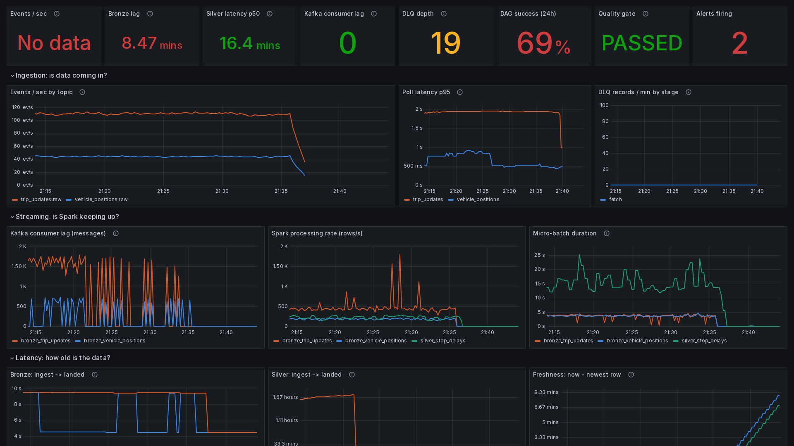</a>
        <figcaption><b>Poller paused for 8 minutes.</b> Events/sec shows no data, bronze lag reads 8.47 min and climbing, Kafka lag stays at 0, and 2 alerts are firing. Diagnosis from the dashboard alone: the source stopped, and Spark is fine. <code>BronzeLagHigh</code> went pending at 3 min and fired at 8. After a restart, the pipeline recovered in 28 s.</figcaption>
      </figure>
      <figure>
        <a class="shot" href="img/grafana-history-orchestration.png">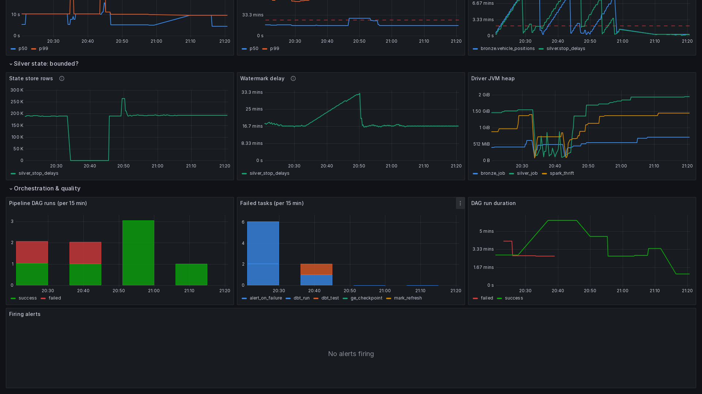</a>
        <figcaption><b>Forced quality failure.</b> A 10-hour delay was injected into silver. <code>dbt_test</code> failed, the run went red, and <code>PipelineDagFailed</code> and <code>QualityGateFailed</code> both fired. After removing the row, the next run was green.</figcaption>
      </figure>
    </div>
    <div class="howto">
      <h3>Run the drills yourself</h3>
      <pre><code>docker compose stop poller     # watch Grafana ~8 min: Bronze lag climbs, alert fires
docker compose start poller

docker compose run --rm dbt python /work/quality/inject_bad_row.py inject   # then trigger the DAG: it goes red
docker compose run --rm dbt python /work/quality/inject_bad_row.py remove   # next run is green</code></pre>
    </div>
  </div>
</section>

<!-- ============ PERF ============ -->
<section id="perf">
  <div class="wrap">
    <div class="stop-head"><span class="stop-dot"></span><span class="eyebrow">Stop 9 · Load, recovery, partitioning</span><h2>Measured numbers</h2></div>
    <p class="intro"><code>scripts/replay.py</code> replays real Kafka history at rising rates until the pipeline falls behind. At 5k events/s the original bronze job broke, because a <code>coalesce(1)</code> made it run on one core out of twelve. Restoring one task per Kafka partition gave about 4× the throughput, at the same latency.</p>
    <div class="numbers">
      <div><b>2k → 10k ev/s</b><span>sustained throughput, before → after the fix</span></div>
      <div><b>5.0 s / 9.9 s</b><span>p50 / p99 ingest → bronze, unchanged at 10k ev/s</span></div>
      <div><b>32 s</b><span>bronze catch-up after 5 min down (40k-message backlog)</span></div>
      <div><b>101 s</b><span>silver catch-up after 5 min down</span></div>
      <div><b>1.9× faster</b><span>one route over 7 days with Iceberg partitioning (51 MB → 4 MB read)</span></div>
      <div><b>11% slower</b><span>one route over full history: the over-partitioning trade-off</span></div>
    </div>
    <figure>
      <a class="shot" href="img/minio-silver-partitions.png">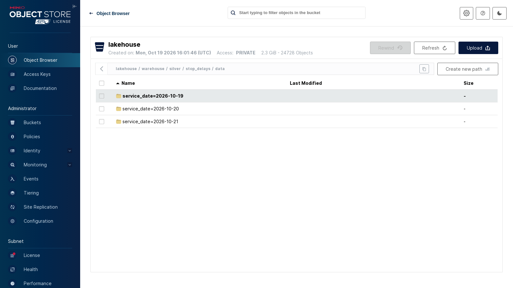</a>
      <figcaption><b>Partitioning on disk:</b> <code>silver.stop_delays</code> is split by <code>service_date</code> (and into 8 route buckets inside each day), so a query for one route over a few days reads only the matching files.</figcaption>
    </figure>
    <div class="howto"><h3>Reproduce</h3><ul><li>The full method, raw data and commands are in <code>scripts/results/phase6_perf.md</code>. Expect the load test to keep the laptop busy for about 20 minutes.</li></ul></div>
  </div>
</section>

<!-- ============ K8S ============ -->
<section id="k8s">
  <div class="wrap">
    <div class="stop-head"><span class="stop-dot"></span><span class="eyebrow">Stop 10 · Kubernetes (kind)</span><h2>Deployed once to Kubernetes</h2></div>
    <p class="intro">The core pipeline (Kafka, MinIO, Postgres, the poller, and three Spark jobs) runs on a local kind cluster. Every pod has readiness and liveness probes, and the streaming jobs use <code>Recreate</code> rollouts so two writers never share a checkpoint. The autoscaler sits on the stateless SQL server. Two pollers would duplicate events, and two streaming jobs would corrupt their checkpoint.</p>
    <div class="tbl"><pre><code>$ kubectl get pods -n transit-lakehouse
NAME                            READY   STATUS      RESTARTS   AGE
iceberg-catalog-db-0            1/1     Running     0          27m
minio-54d7c4b66b-7qsgq          1/1     Running     0          27m
minio-init-cfj45                0/1     Completed   0          26m
poller-769d67b4dc-wb2gl         1/1     Running     0          3m53s
redpanda-0                      1/1     Running     0          27m
spark-bronze-6bb6cc7d8b-gh9kg   1/1     Running     0          26m
spark-silver-6fd68f775-d4ltd    1/1     Running     0          26m
spark-thrift-6f5fbf68f6-kpvnv   1/1     Running     0          26m
spark-thrift-6f5fbf68f6-n9tzc   1/1     Running     0          3m4s    &lt;- HPA scaled 1 → 2

horizontalpodautoscaler/spark-thrift   cpu: 1%/70%   min 1   max 2   replicas 2</code></pre></div>
    <details>
      <summary>Break-it drill: three misconfigured probes</summary>
      <div class="tbl"><table>
        <thead><tr><th>Change</th><th>What happened</th><th>Fix</th></tr></thead>
        <tbody>
          <tr><td>Readiness probe → port 8001</td><td><code>0/1 Running</code>, the Service had no endpoints, and the app kept running unseen</td><td><code>rollout undo</code>, recovered in 13 s</td></tr>
          <tr><td>Liveness probe → path <code>/healthz</code></td><td>Nothing: the metrics server answers 200 on every path, so the probe checked nothing</td><td>A lesson in what a probe actually checks</td></tr>
          <tr><td>Liveness probe → port 8001</td><td><code>CrashLoopBackOff</code> after 6 restarts</td><td><code>rollout undo</code></td></tr>
        </tbody>
      </table></div>
    </details>
    <div class="howto"><h3>Try it</h3><ul><li>Run <code>docker compose stop</code> first to free memory, then follow <code>k8s/README.md</code>: <code>kind create cluster</code>, load the two local images, and apply the manifests in order. Tear down with <code>kind delete cluster</code>.</li></ul></div>
  </div>
</section>

<!-- ============ RUN ============ -->
<section id="run">
  <div class="wrap">
    <div class="stop-head"><span class="stop-dot"></span><span class="eyebrow">Last stop</span><h2>Run it yourself</h2></div>
    <p class="intro">You need Docker Desktop with about 12 GB of memory for containers. The first build takes 20–30 minutes; after that, startup takes a couple of minutes. MBTA's feed needs no API key.</p>
    <div class="cols">
      <div class="howto">
        <h3>First start</h3>
        <pre><code>git clone https://github.com/kushalmehta2004/transit-lakehouse.git
cd transit-lakehouse
cp .env.example .env
docker compose build
docker compose --profile tools build dbt
docker compose up -d
docker compose ps        # wait for (healthy)</code></pre>
      </div>
      <div class="howto">
        <h3>What appears when</h3>
        <ul>
          <li><b>~10 s:</b> live messages in Kafka</li>
          <li><b>~1 min:</b> rows in bronze</li>
          <li><b>~16–20 min:</b> rows in silver (the watermark)</li>
          <li><b>next quarter hour:</b> gold tables and quality gates via Airflow</li>
          <li>Stop with <code>docker compose stop</code>; resume with <code>docker compose up -d</code></li>
        </ul>
      </div>
    </div>
    <div class="tbl"><table>
      <thead><tr><th>UI</th><th>Address</th><th>Login</th></tr></thead>
      <tbody>
        <tr><td>Grafana dashboard</td><td>localhost:3000</td><td>none to view</td></tr>
        <tr><td>Airflow</td><td>localhost:8081</td><td>admin / admin</td></tr>
        <tr><td>Kafka console</td><td>localhost:8080</td><td>—</td></tr>
        <tr><td>MinIO console</td><td>localhost:9001</td><td>minioadmin / minioadmin</td></tr>
        <tr><td>Prometheus</td><td>localhost:9090</td><td>—</td></tr>
        <tr><td>Spark UIs (bronze / silver / SQL)</td><td>localhost:4040 · 4041 · 4042</td><td>—</td></tr>
        <tr><td>SQL over JDBC</td><td>jdbc:hive2://localhost:10000</td><td>—</td></tr>
      </tbody>
    </table></div>
  </div>
</section>

</main>

<footer>
  <div class="wrap">
    <p>Built on Redpanda, Spark 3.5 Structured Streaming, Apache Iceberg 1.5, MinIO, dbt 1.8, Great Expectations 0.18, Airflow 2.9, Prometheus, Grafana and kind. Data: MBTA GTFS and GTFS-realtime feeds. All screenshots come from the running system, captured Oct 21, 2026.</p>
    <p><a href="https://github.com/kushalmehta2004/transit-lakehouse">github.com/kushalmehta2004/transit-lakehouse</a></p>
  </div>
</footer>
